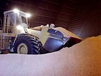

|

As with the other nutrients the requirement for minerals varies in amounts that relate to the major use of the element in the body. Also body size, age and gender affect recommended daily amounts. Many of the minerals are still under investigation as their role in long-term health is still largely unknown. We generally divide minerals into two groups:
MacromineralsCalcium (Ca) and Phosphorus (P) Calcium and Phosphorus are minerals required by the body in the greatest amounts since they make our bony skeleton and teeth. Calcium is also used for blood clotting, muscle contraction, functioning of certain enzymes and for keeping cell membranes permeable to certain fluids. Bones contain 98-99% of the body calcium. Phosphorus is essential to the energy functioning of every living cell. It is also involved in RNA, DNA and cell wall synthesis. The acid-alkaline balance of the blood is controlled by phosphorus. About 80% of the body's Phosphorus is contained in the bones,10% in muscles, and 1% in the nervous system the remaining 9% is distributed throughout the body. Sources:Dairy products (e.g. milk and cheese) and inorganic supplements are good sources of calcium and phosphorus.
Health Issues: A deficiency of calcium results in decreased growth (in young), weight loss, reduced appetite, osteoporosis (decreased bone density) and osteomalacia are characteristic of a calcium deficiency. Post menopausal females have to be particularly careful about maintaining sufficient calcium intake. RDA: For each of calcium and phophorus -1200 mg (young teenage male), 800 mg (adult male), 700 mg (adult female). Magnesium (Mg) Magnesium is used in the body to activate several enzyme systems and is important to maintain the electrical potential of nerves and membranes. It is also involved in muscle contraction and is necessary for the metabolism of calcium and phophorus. Bones contain 60-70% of the body magnesium.
Sources: Dairy products, green leafy vegetables, cereal grains. Health Issues: Deficiency can result in retarded growth, hyperirritability, anorexia, incoordination and tetany (muscle spasms). RDA: 300 mg (adult male), 250 mg (adult female) Potassium (K) Potassium has similar functions to sodium in that it regulates osmotic pressure and pH balance - but inside the cell. Potassium is important for nerve transmission, muscle contraction and heart beat. Sources: Meats, fruits and leafy vegetables are good sources of potassium. Health Issues:Potassium is rarely limiting. Most diets have an adequate supply of this essential element. Impaired neuromuscular functions and reduced reflexes are typical signs of a potassium deficiency. Sodium (Na) and Chloride (Cl) Sodium and chloride are the main ions in the fluid outside of cells (extracellular). They maintain the osmotic equilibrium and volume of body fluids. The level of sodium is regulated by hormones to maintain a constant Na:K ratio. Sodium helps maintain normal muscle and heart contractions and helps control entrance of nutrients into cells and removal of waste out of cells. The chloride anion is major component of the stomach digestive acid, hydrochloric acid. Sources:Dairy products, seafood, carrots, celery are good sources of sodium. Since most vegetables are relatively low in salt, vegetarians need to take a salt supplement as do grass eating animals. Health Issues: A sodium deficiency is most likely to occur in the young, during lactation, and in hot conditions or excessive exercise (loss of salt through perspiration). Dizziness, fatigue, headache, nausea and cramps are typical symptoms of a sodium deficiency. Chloride deficiency is rare, except in infants. Loss of appetite, muscle weakness and metabolic acidosis are symptoms of chloride deficiency RDA: Approximately 10 g of salt (sodium chloride).
MicromineralsIron (Fe) Iron is an essential component of the blood compound haemoglobin, the compound that carries oxygen to every body cell. It is also part of the muscle myoglobin. Blood contains about 60% of the body's iron content. Sources: Meat and liver are good sources. Milk products are poor sources. Plant forms of iron (i.e. iron phytates and phosphates) have very low availability. Health Issues:Iron deficiency may be the most common mineral deficiency in developed countries. Anemia (low blood haemoglobin) is a common result of iron deficiency - especially in young people and women in their reproductive years. Fatigue and anorexia are other symptoms of iron deficiency. RDA: 10 mg (adult male) 14 mg (adult female)
Copper (Cu) Copper is required in bone formation, cellular respiration and cardiac function. It is used for connective tissue development, myelination (protective coating) of the spinal cord and a component of several enzymes. Copper is also necessary for Fe absorption and mobilization. Sources:Animal products, legumes, fish, whole grains are good sources of copper Health Issues: Copper deficiency is rare in adults, more common in children. Anemia, diarrhea, bone disorders, nerve disorders and cardiovascular disorders are signs of a copper deficiency. RDA: For adults 1.5-3.0 mg per day
Zinc (Zn) Zinc is an essential component of enzyme systems that are involved in carbohydrate and protein metabolism and nucleic acid synthesis. Recent research is revealing an important role of this element in boosting the natural immune system against diseases such as malaria and pneumonia. Sources: nuts, legumes, fish, whole grains are good sources of zinc Health Issues: Deficiency results in impaired growth, skin lesions and loss of appetite. RDA: For adults 12-15 mg per day; 19 mg per day for lactating females. Molybdenum (Mo) Molybdenum is a component of several enzyme systems.It is involved in the metabolism of purines and pyrimidines, which are important for DNA and RNA synthesis. Sources: Liver, whole grains and beans are good sources of molybdenum Health Issues:hypermethioninemia, increased urinary xanthine and decreased urate excretion are signs of a molybdenum deficiency. RDA: For adults 75-250 micro grams per day
Iodine (I) The major function of iodine is in the formation of the thyroid hormone (thyroxin). It is also involved in muscle function and growth. Sources: Saltwater seafood, beef liver, peanuts are good natural sources. Sodium iodide is usually added to common salt (iodized salt) to avoid health problems. Health Issues: Iodine deficiency results in Goiter (swollen thyroid). Goiter is 20-30 times more common in women than men. Impaired fetal development, mental development and congenital defects are additional iodine deficiency signs. Iodine antagonists (cabbage, soybeans and peanuts) may interfere with thyroid hormone synthesis. RDA: 150 mg (adult male) 110 mg (adult female) Cobalt (Co) Cobalt is a source of Vitamin B12. Sources: Animal products and vitamin B12 supplements are good sources of cobalt. Health Issues: Strict vegetarians may experience cobalt deficiency resulting in a lack of B12.
Other MineralsFluoride (F): Decreasing dental caries is a primary function of fluoride. Fluoride is also involved with osteoporosis and osteosclerosis. RDA: For adults 1.5-4.0 mg per day Selenium (Se): Selenium is an antioxidant that is closely linked to vitamin E. RDA: For adults 55-70 micro grams per day Boron (B): Boron may have an essential function for hormone action, affecting Ca and P metabolism. Boron may improve symptoms of rheumatoid arthritis. Chromium (Cr): Chromium may be essential for normal insulin and glucose function. Chromium is involved in the "glucose tolerance factor" affecting insulin and the clearance of glucose from the body. RDA: For adults 50-200 micro grams per day Lithium (Li): Lithium may also be essential. Lithium is currently used as therapy to treat manic depressive psychosis (bi-polar disorder). Nickel (Ni): Nickel is essential for certain animals but not in humans. However, nickel may be involved in enzyme activity in humans. Silicon (Si): Silicon is essential for growth and skeletal development in certain animal species. Silicon is currently not considered to be essential for humans, but silicon may be involved in the formation of connective tissue, bone matrix, atherosclerosis, hypertension and in the aging process. Vanadium (V): Vanadium is believed to be essential in certain animals but is not known to be essential in humans. A vanadium deficiency may alter Fe metabolism, impair heme synthesis and affect lipid metabolism. Arsenic (As): Arsenic is a very toxic mineral but problems with arsenic are rare in most parts of the world, but certain areas of Argentina, Mexico and India and the United States have high levels in the water, in particular, well and spring water. In animals arsenic is necessary for normal growth. The role of Arsenic in human nutrition has yet to be determined.
|